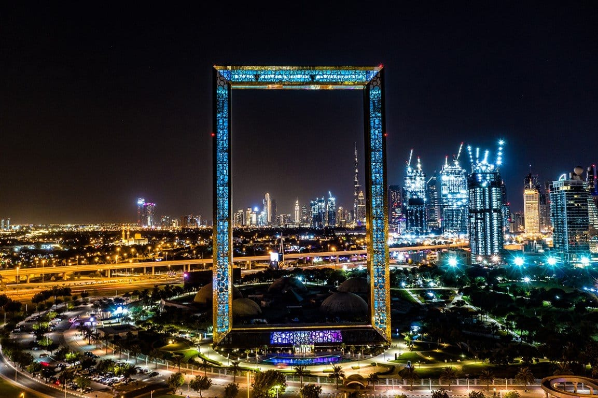

Pontos Turisticos
Dubai é uma cidade fascinante e cheia de atividades interessantes para fazer.
Aqui estão algumas
sugestões do que você pode fazer durante a sua visita a Dubai:
Burj Khalifa
Visite o edifício mais alto do mundo e desfrute das incríveis vistas panorâmicas da cidade a partir
do deck de observação.
O Burj Khalifa é um arranha-céu icônico localizado em Dubai, nos Emirados Árabes Unidos.
Ele é conhecido por ser o edifício mais alto do mundo, com uma altura impressionante de 828 metros
(2.722 pés).
O Burj Khalifa foi projetado pelo arquiteto Adrian Smith da empresa de arquitetura Skidmore, Owings
& Merrill e foi inaugurado em 4 de janeiro de 2010.
O edifício não é apenas uma proeza arquitetônica, mas também se tornou um símbolo da modernidade e
inovação de Dubai.
Além disso, o Burj Khalifa desempenhou um papel importante na transformação da paisagem urbana de
Dubai e contribuiu significativamente para o seu status como um destino turístico de renome mundial.
Aquaventure Waterpark
O Aquaventure Waterpark é um popular parque aquático localizado no resort Atlantis The Palm em
Dubai.
É um destino emocionante para famílias, amigos e viajantes que buscam diversão aquática e aventura.
O parque oferece uma variedade de toboáguas e escorregadores emocionantes, desde os mais tranquilos
até os mais radicais,
como o "Leap of Faith", que leva os visitantes a deslizarem através de um tubo transparente que
passa por um aquário de tubarões.
O Aquaventure oferece áreas de praia com areia branca, bem como várias piscinas, incluindo uma
piscina de ondas.
Há áreas dedicadas para crianças com escorregadores menores e atividades aquáticas, tornando o
parque adequado para todas as idades.
Burj Al Arab

O Burj Al Arab é um dos hotéis mais icônicos e luxuosos do mundo, localizado em Dubai, Emirados
Árabes Unidos.
Conhecido por sua arquitetura distinta em forma de vela e seu serviço de classe mundial, o Burj Al
Arab é um verdadeiro marco da cidade.
Ele é projetado para se assemelhar a uma vela de dhow, um barco tradicional árabe. Sua estrutura
única se destaca no horizonte de Dubai.
O hotel fica em uma ilha artificial conectada à costa por uma ponte privativa. é frequentemente
descrito como um hotel de sete estrelas,
embora não exista oficialmente uma classificação de sete estrelas.
Dubai Miracle Garden
O Dubai Miracle Garden é um dos jardins mais impressionantes e únicos do mundo, localizado em Dubai,
Emirados Árabes Unidos.
Este jardim exuberante e colorido é famoso por suas exposições de flores e esculturas elaboradas,
que atraem visitantes de todas as partes em busca de uma experiência visualmente deslumbrante.
Palm Jumeirah
<
A Palm Jumeirah é uma das atrações mais icônicas de Dubai. Ela é um arquipélago artificial em forma
de palmeira localizado na costa de Dubai.
Ela é uma criação impressionante da engenharia que se assemelha a uma palmeira quando vista de cima,
ela consiste em um tronco, uma coroa com 16 ramos e uma série de crescentes que protegem o conjunto
das ondas do mar.
A ilha abriga alguns dos hotéis mais luxuosos do mundo, incluindo o icônico Atlantis, The Palm, que
possui um aquário espetacular,
um parque aquático chamado Aquaventure e uma praia privada.
Dubai Frame

O Dubai Frame é uma atração arquitetônica distinta localizada em Dubai, Emirados Árabes Unidos.
Ele é uma estrutura de aço e vidro com uma forma retangular e é projetado para criar uma "moldura"
que captura as vistas panorâmicas da cidade,
ele está situado no Zabeel Park, oferecendo uma vista espetacular das duas principais partes de
Dubai
- a parte antiga (Deira e Bur Dubai) e a parte moderna (Jumeirah e Downtown Dubai).
O design do Dubai Frame é o que o torna verdadeiramente especial. Ele possui dois pilares verticais
conectados por uma passarela horizontal no topo. A ideia é que,
quando você olha através do Dubai Frame, uma parte da cidade moderna é vista de um lado e a parte
antiga do outro, simbolizando a conexão entre o passado e o futuro de Dubai.
Mais imagens de Dubai Frame:
The point

The Pointe é um destino de entretenimento e lazer localizado na Palm Jumeirah, uma ilha artificial em
forma de palmeira.
O The Pointe é um calçadão à beira-mar que abriga uma variedade de restaurantes, lojas e entretenimento.
Ele oferece vistas espetaculares da Atlantis, The Palm, e é um ótimo local para passeios à noite.
Uma das atrações principais de The Pointe é a Fonte The Pointe, que realiza espetáculos de água e luzes
ao estilo das famosas Fontes de Dubai.
Um grande espetaculo que acontece no The point é o show de aguas.
Madinat Jumeirah

Um complexo de luxo em Dubai, Emirados Árabes Unidos, que combina elementos tradicionais e modernos
da arquitetura árabe.
É um destino popular para turistas e moradores locais, oferecendo uma experiência única que
incorpora hotéis, restaurantes, lojas e entretenimento.
Madinat Jumeirah foi projetado para recriar a atmosfera de uma vila árabe tradicional. Ele possui
canais navegáveis, vielas de paralelepípedos,
edifícios em estilo arquitetônico clássico e elementos inspirados na cultura local.